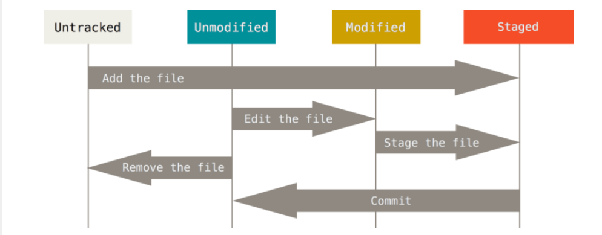

git and github
basic information of git
git is a distributed version control system as opposed to centralized version control system
git makes every developers' computer contains the whole history (git保存的代码版本，存放在本电脑中，而不是远程服务器
and centralized version control system makes the history stores in a remote server
we will call the entire history of the whole project "repository"
basic git command
if you want to use checkout command, you would better choose one folder or file.
when we initialize a git repository, we will create a '.git' subdirectory in it.
this subdirectory will contain a brunch of metadata, and we will never directly open it.

we can use command "git status" to check the status of each file
git add 用来把指定文件添加到下一次要提交的内容中
git commit 把要提交的东西保存下来，并且添加说明
git log is a good way to view commit history
undoing changes 撤销更改
We can use the command git reset FILENAME to take the file status back to the modified.
remote repository
how to connect with your own repository
- 我们需要把本地的git仓库和我们建立的GitHub仓库远程链接
- 我们GitHub账号需要链接上本地git账号的rsa密钥
- 本地git 进行各种处理之后，可以push给GitHub了 git push origin master 这是直接传递给主枝干的命令
git branch
Former action we mentioned is all in the master branch. Although we can iterated many version of the master branch, it still have limited function.
And branching allows our program having multiple dimensions. Each time you want to make a dramatic change to your code or you just don't want to mix you work up or you may have several opinion and you don't which one will works, you can choose to make a branch.
basic command of git branching
git branch BRANCH_NAME //create a new branch
git checkout BRANCH_NAME //switch from one branch to another
git checkout -b BRANCH_NAME //create a new branch and turn into it
git branch -d BRANCH_NAME //delete one branch
Note: it is advised that you should use the default "master" branch as your main branch.
branch merging
These two commands will delete the branch and merge it into master.